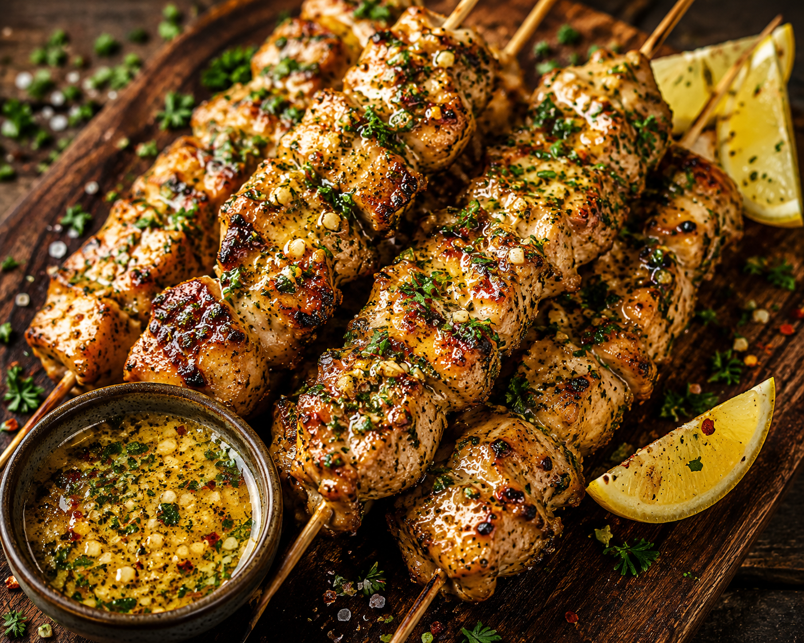

Cowboy Chicken Skewers

Description
Make the butter ahead of time, then brush it over juicy grilled chicken for an easy dinner packed with bold, buttery, smoky, and spicy flavor.
Ingredients
- 1/2 cup salted butter, softened
- 4 cloves garlic, minced
- 1 tablespoon chopped fresh flat-leaf parsley
- 1 tablespoon chopped fresh chives
- 2 teaspoons Dijon mustard
- 1 teaspoon lemon zest
- 1 teaspoon smoked paprika
- 1/2 teaspoon lemon juice
- 1/2 teaspoon chopped fresh thyme
- 1/4 teaspoon chili powder
- 1/4 teaspoon crushed red pepper
- 1 pound skinless, boneless chicken breasts or thighs
- 1 tablespoon olive oil
- 1/2 teaspoon salt
Steps
- For cowboy butter, stir together butter, garlic, parsley, chives, mustard, lemon zest, smoked paprika, lemon juice, thyme, chili powder, and crushed red pepper in a medium bowl. Wrap in plastic wrap and chill 2 hours, or until ready to use.
- Cut chicken in bite-size pieces. Toss chicken to coat with oil, salt and pepper in a medium bowl. Thread on eight 6-inch skewers leaving about 1/4-inch between pieces.
- Place skewers on the oiled rack of an outdoor grill directly over medium heat. Cover and grill until no longer pink (165 degrees F or 74 degrees C), 8 to 10 minutes, turning once. Or preheat an air fryer to 400 degrees F (200 degrees C). Place skewers in the air fryer basket. Cook until no longer pink (165 degrees F or 74 degrees C), 11 to 12 minutes, turning once.
- Melt half of the cowboy butter. Drizzle over the cooked chicken skewers to coat. Serve with remaining cowboy butter.
home